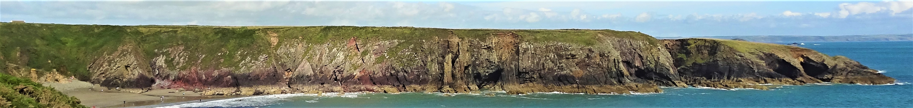
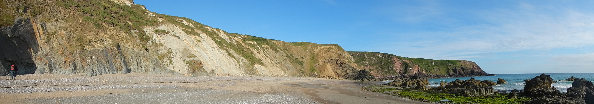
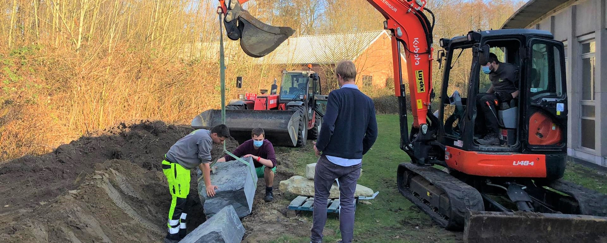

My current role is research-only, but I have previously taught and assisted with lab- and field-based courses at the University of Leicester, Ghent University, and the Vrije Universiteit Brussel. From 2019 to 2023, I taught MSc (Geology) modules in micropalaeontology, palaeoenvironments, and field geology at Ghent University, Belgium, and for the MSc in Marine and Lacustrine Science and Management jointly across Ghent University, Vrije Universiteit Brussel, and University of Antwerp. My classroom teaching focused on the biology and ecology of pre-Mesozoic micro-organisms and what they can tell us about ancient environments. My field teaching has included field courses in the Boulonnais Basin, northern France, and the Welsh Basin, UK, with a focus on stratigraphy, palaeontology, and large-scale ocean basin evolution. Before I joined Ghent University, I was a teaching assistant on various modules on the undergraduate and master's natural science and geology courses at the University of Leicester, which included teaching laboratory practicals in a range of geoscience subjects and field courses across the UK and in Europe.

I think that geoscience teaching should be both practical and discovery-led. I am also keen to ensure that practical geoscience teaching is as accessible as possible. In pursuit of both of these aims I led development of the Ghent University Rock Garden - an on-campus field skills teaching resource. As a result of the coronavirus pandemic in 2020, we had to quickly switch our field teaching for parts of 2020 and 2021 to virtual or classroom-based activities. To mitigate for this, I developed a virtual field course in the Welsh Basin including using commissioned drone photogrammetry to make virtual outcrops of some of the key field sites, as well as making sure students and teachers got some walking exercise between outcrops (in a safe and socially distanced manner).
